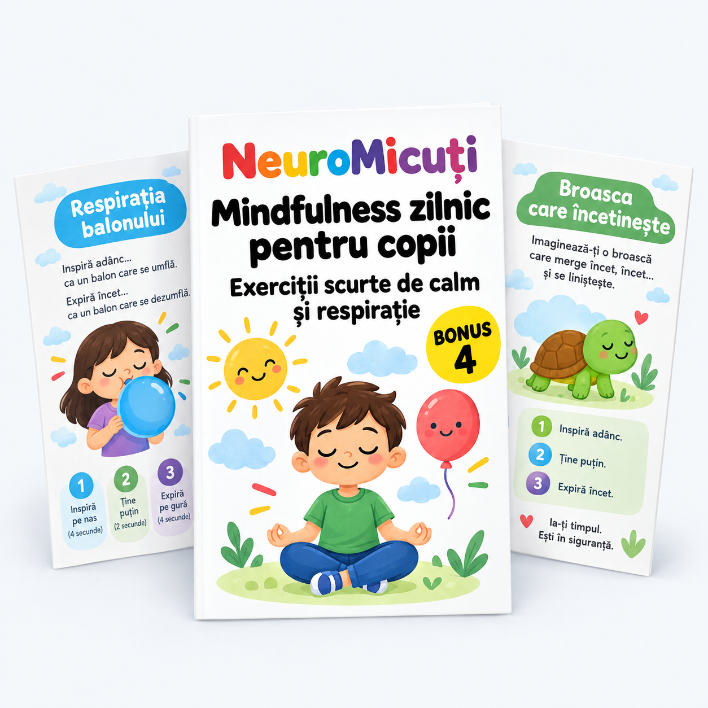

Nu e meditație complicată. E atenție la ce se întâmplă acum, în corp și în jur.
Un copil care știe să se oprească 2 minute și să respire conștient nu va fi mai puțin energic. Va fi mai echilibrat.
| MIT | REALITATE |
|---|---|
| „Trebuie să stea nemișcat" | Poate să se miște — unele exerciții implică mers |
| „E pentru copii calmi" | E cel mai util tocmai pentru copiii agitați |
| „Durează mult" | 2-3 minute sunt de ajuns |
| „E religios / spiritual" | E antrenament de atenție, la fel ca un sport |
| „Funcționează din prima" | Rezultatele apar după 5-7 zile consecutive |
Fiecare durează 2-3 minute. Copilul le poate face singur, oriunde.
Imaginează-ți că umfli un balon mare și colorat.
Inspiră 4s → Expiră lent 6s
Repetă de 5 ori. Balonul crește cu fiecare expirație.
Vârstă: 3-6 ani · Durată: 2 min · Când: oricând e agitat
Desenează o stea pe hârtie. Cu degetul, urmărește fiecare colț:
Colț în sus = Inspiră · Colț în jos = Expiră
5 colțuri = 5 respirații complete. La final, pune mâna pe piept și simte cum bate inima.
Vârstă: 4-8 ani · Durată: 2 min · Când: înainte de teme
Pune mâinile pe urechi. Inspiră pe nas. Expiră făcând „mmmmm" (ca o albină).
Inspiră 3s → „Mmmmm" 5s
Repetă de 5 ori. Vibrația calmează sistemul nervos.
Vârstă: 4-10 ani · Durată: 2 min · Când: după o ceartă sau când e frustrat
Stai pe spate. Pune o jucărie mică pe burtică. Respiră așa încât jucăria să urce și să coboare ca pe un val.
Inspiră ușor → Jucăria urcă · Expiră ușor → Jucăria coboară
10 valuri. Dacă jucăria cade, o pui la loc și continui.
Vârstă: 3-7 ani · Durată: 3 min · Când: seara, înainte de somn
Imaginează-ți că ai o floare într-o mână și o lumânare în cealaltă.
Inspiră pe nas = miroși floarea · Expiră pe gură = sufli lumânarea
Alternează: inspiră floarea, expiră lumânarea. De 6 ori.
Vârstă: 3-8 ani · Durată: 2 min · Când: tranziția de la joacă la teme
Inspiră adânc pe nas (3 secunde). Apoi expiră puternic pe gură cu un „HAAA!" — ca un dragon care suflă foc.
Inspiră 3s → „HAAA!" puternic
De 5 ori. Expirul puternic eliberează tensiunea. Ideal după furie sau frustrare.
Vârstă: 4-12 ani · Durată: 2 min · Când: când simte furie intensă
Mindfulness nu e doar respirație — e și atenție la ce e în jur.
Închide ochii. Stai nemișcat 30 de secunde. Apoi spune 3 sunete pe care le-ai auzit.
De ce funcționează: mută atenția din gânduri în prezent. Gândurile încetinesc.
Varianta avansată: ascultă sunetul cel mai îndepărtat pe care îl poți auzi.
Alege un obiect (floare, fruct, săpun). Miroase-l cu ochii închiși. Descrie mirosul cu 3 cuvinte — fără „miroase bine/rău".
Exemplu: o portocală → „proaspăt, dulce, umed"
Antrenează vocabularul senzorial și concentrarea pe un singur simț.
Mergi prin cameră foarte încet. La fiecare pas, simte:
10 pași în liniște. Nu contează viteza — contează atenția.
Ia un biscuit sau o bucată de ciocolată. În loc să-l mănânci repede:
Cu vârful degetului mare, atinge pe rând fiecare deget al mâinii. La fiecare atingere, spune un lucru pentru care ești recunoscător.
Degetul mare → „Mama" · Arătător → „Casa mea" · Mijlociu → „Prietenul meu" · Inelar → „Câinele" · Mic → „Ciocolata"
Repetă pe ambele mâini = 10 lucruri bune.
Fiecare moment al zilei are exercițiul lui potrivit.
| Situația | Exercițiu recomandat | De ce |
|---|---|---|
| Dimineața, la trezire | Steaua cu 5 colțuri (#2) | Pornește ziua cu intenție, nu cu ecranul |
| Înainte de teme | Floarea și lumânarea (#5) | Tranziție lină de la joacă la concentrare |
| După o ceartă | Albina (#3) sau Dragonul (#6) | Eliberează tensiunea fizică |
| Când e anxios | Ascultă 3 sunete (#7) | Ancorează atenția în prezent |
| La gustare | Gustarea conștientă (#10) | Transformă o activitate obișnuită în antrenament |
| Seara, la culcare | Valul (#4) | Calmează corpul pentru somn |
| Oricând, oriunde | Degetele conștiente (#11) | Funcționează fără materiale, fără loc special |
O săptămână de mindfulness cu un exercițiu pe zi, gata de urmat.
| Ziua | Exercițiu | Momentul | Durată | Făcut? |
|---|---|---|---|---|
| Luni | Balonul (#1) | Dimineața | 2 min | ⬜ |
| Marți | Steaua cu 5 colțuri (#2) | Înainte de teme | 2 min | ⬜ |
| Miercuri | Ascultă 3 sunete (#7) | După școală | 2 min | ⬜ |
| Joi | Gustarea conștientă (#10) | La gustare | 3 min | ⬜ |
| Vineri | Floarea și lumânarea (#5) | Înainte de teme | 2 min | ⬜ |
| Sâmbătă | Mersul lent (#9) | Dimineața | 3 min | ⬜ |
| Duminică | Valul (#4) | Seara, la culcare | 3 min | ⬜ |
Alege un exercițiu din planul de 7 zile și fă-l azi cu copilul tău. Primele zile, fă-l împreună — după, lasă-l să-l facă singur.
Apoi deschide materialul principal NeuroMicuți și combină 2 minute de mindfulness + 10 minute de activități cognitive. Împreună, sunt 12 minute care schimbă ziua.